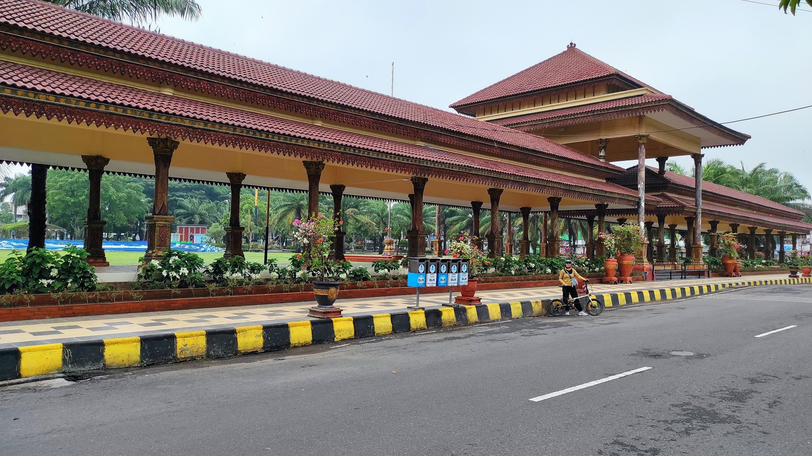
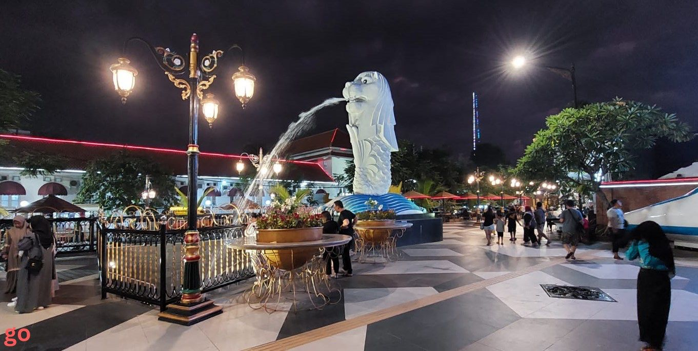
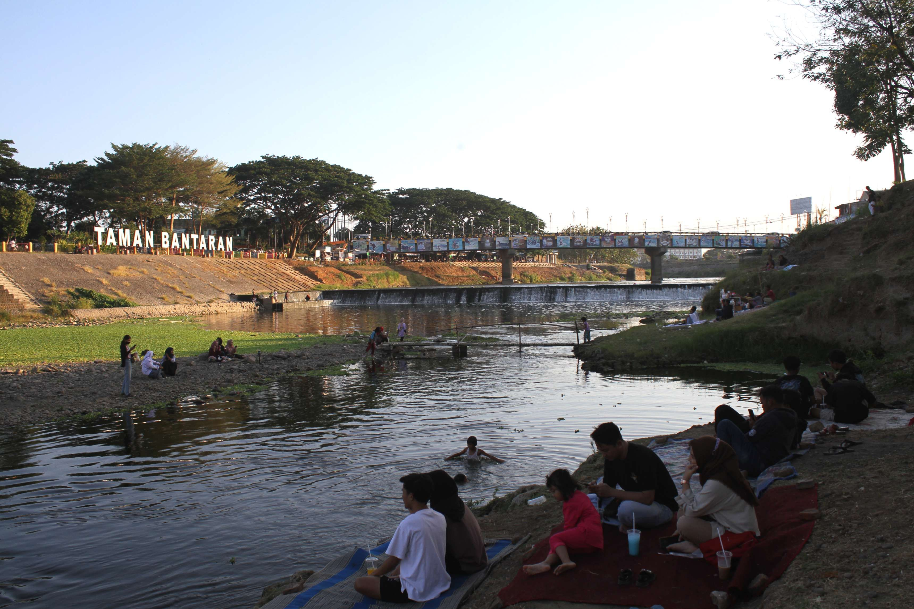
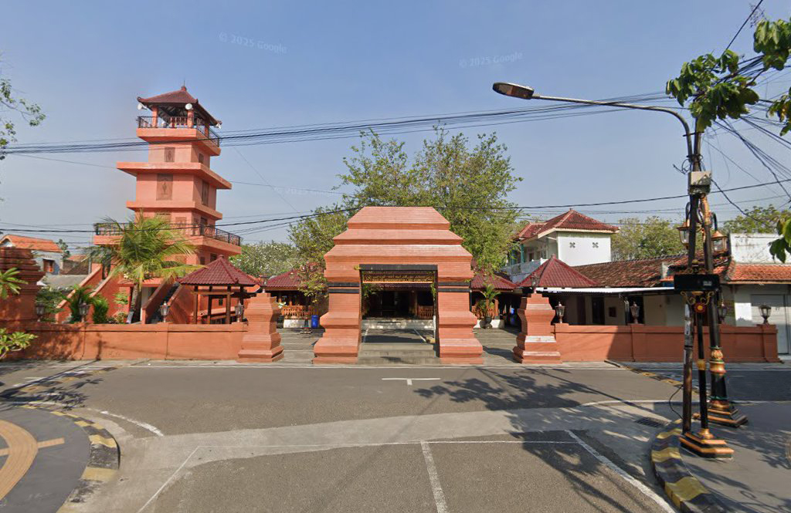
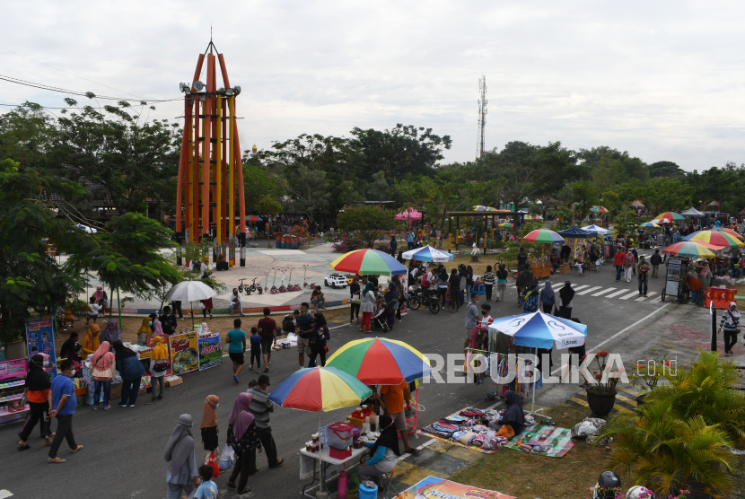
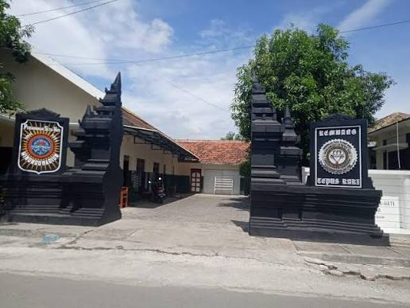

Destinasi favorit untuk jalan santai, foto-foto, dan kulineran. Klik kartu untuk detail.

Pusat kota • Air mancur menari • Kuliner malam

Jalan Pahlawan • Spot foto • Kafe & kuliner

Tepi sungai • Merlion Madiun • Perahu wisata

Cagar budaya • Arsitektur Jawa • Wisata religi

Edukasi anak • Rekreasi keluarga • Murah meriah

Ikon silat • Patung pesilat • Sejarah Madiun